MiSonics IUC 300
Ultrasonic Cleaning System
A single-chamber aqueous ultrasonic cleaning system with integrated cartridge filtration — supplied and supported by Kleentek Australia.
Read this before operating the machine
This manual covers the principles, operation, control software and servicing of your Kleentek Australia MiSonics IUC 300 single-chamber ultrasonic cleaning system. It is in two parts: the system manual (Sections 1–12) covers the machine itself, and the generator manual (Sections G1–G7) covers the ACG ultrasonic cleaning generators fitted to it.
The instructions should be carefully studied by machine operators and service mechanics before the machine is operated. Operators should be familiar with Sections 4–6 before running a cycle; service staff should also read Sections 6–12 and the generator manual. Keep this manual with the machine.
How ultrasonic cleaning works
Ultrasonic cleaning offers a number of advantages over manual methods:
- Cleans surfaces without scratches
- Short cleaning times
- Simple to use
- No stressful manual work
- Needs fewer chemical agents
- Reproducible, automatic processing
1.1 The physics of ultrasonic cleaning
Ultrasonic waves have a frequency above the audible limit of the human ear. These waves propagate longitudinally and are reflected at several points on a surface to produce standing waves, which have high- and low-pressure areas. Depending on power density and frequency, extremely steep pressure gradients develop and the liquid molecules are accelerated. These accelerated molecules play only a small part in the cleaning process — the main effect is cavitation.
1.2 What is cavitation?
Under the influence of the low-pressure cycles, the boiling point of the water is reached and the liquid begins to form micro-steam bubbles. The high-pressure cycles cause these microscopic bubbles to implode. If this occurs at the surface of the item being cleaned, the pressure cycles lead to a local impact, producing a mechanical scrubbing action at the surface.
The sum of the cavitation impacts produces an outstanding cleaning effect, comparable to the action of countless micro-brushes. With cleaning agents, ultrasonic cleaning becomes an economical production method.
1.3 The four influences on cleaning
The most important influences on ultrasonic cleaning are cavitation, chemistry, temperature and time. The requirements for a good cleaning system are therefore:
- Sufficient ultrasonic power to produce efficient cavitation.
- A liquid with high chemical efficiency at a specific temperature and cleaning time that will not damage the surface being cleaned.
The use of warm liquids improves ultrasonic cleaning efficiency. Cleaning agents are classified into two major groups: aqueous solutions and organic solvents.
Cleaning agents & precautions
| Agent | pH range | Behaviour |
|---|---|---|
| Alkaline | 8 – 14 | Very good binding agent for fat-containing / hydrophobic contaminants. Above pH 10 it can begin to attack certain materials such as aluminium and zinc. |
| Neutral | 7.5 – 9.5 | No special cleaning effect; used to bind normal dirt. |
| Acidic | 2 – 6 | Binds fat and oil (but not as well as alkaline agents) and is effective on oxidised surfaces. The corrosive effect on ferrous materials increases at lower pH. |
Organic agents have good grease-removing properties and dry rapidly by evaporation, but are relatively expensive and more toxic than aqueous media. Because of environmental regulations, their use should be minimised.
2.4 Principle of an ultrasonic cleaning system
The generator converts the mains frequency (50/60 Hz) to a high frequency (20–40 kHz). The ultrasonic converter then changes this electrical energy into mechanical energy at the same frequency, and the mechanical waves are transmitted through the tank into the liquid. If enough power density is available, the liquid begins to cavitate.
2.5 Precautions
Safety information
- Before connecting or disconnecting cables, always switch the equipment off and remove the mains plug from its socket.
- When connecting or disconnecting cables, ensure your hands are dry and only grasp the plugs.
- If a machine plug has come into contact with liquid, it must be cleaned and dried with compressed air before being plugged in.
- No acidic or acid-forming additives may be used (except after consultation with the manufacturer). Note: halogen concentrations from chlorine, fluorine, bromine or iodine ions can cause pitting.
- Flammable or explosive liquids may never be used.
- No unprotected human or animal body parts may be immersed in the cleaning bath — ultrasonic, thermal or chemical effects can cause injury.
- Do not operate the system if cables are damaged or if it has been subjected to abnormal mechanical stress such as a fall or severe impact. In such cases the equipment must be checked and repaired by an authorised service centre, by suitably trained staff only.
- If the equipment is used for a purpose other than specified, is incorrectly operated, or has been modified, no liability for possible damage will be accepted.
An introduction to the system
The MiSonics IUC 300 is a single-chamber ultrasonic cleaning system, specially designed for cleaning a variety of components in a water-based cleaning solution, with an integrated filtration unit. Overall machine size is approximately 1650 × 1200 × 1162 mm (L×W×H).
Baskets of components are transferred manually by the operator. For heavy parts, an overhead hoist is recommended; loading and unloading of heavy parts is generally done from the hoist hook at the top of the tank.
3.1 The process tank
This is the main cleaning stage, where turbulence and ultrasonics work in tandem to clean the component. The ultrasonic effect reaches every area of the part; the mechanical vibrations dislodge contamination from the component into the cleaning solution. The single-stage cartridge filtration removes that contamination, keeping the bath clean and sustaining the cleaning level for longer.
| Tank material | SS 316L, 2 mm thick |
| Full tank size (L×W×H) | 800 × 700 × 800 mm |
| Tank lid | Provided (hinged SS lid, gas-spring assisted) |
| Capacity (full tank) | 390 litres (≈ 300 L at overflow) |
| Weir tank | SS 316L, 2 mm · 220 × 700 × 800 mm · 110 L capacity |
| Ultrasonic generators | 3 × ACG-25XXR (Eco type) |
| Tube resonators | 3 × 669 mm length, 25 kHz |
| Level switches | 2 × Endress+Hauser FTL31 |
| Filter housing | DOE-type cartridge filter housing, 1″ BS-10 Table E connections |
| Filters | Cartridge, 10″ long — 50 micron & 125 micron |
| Heaters | 2 × 4 kW, 3-phase, cartridge type |
| Temperature sensor | RTD PT100, 100 mm below flange, 3-wire, Ø6.5 mm (Radix) |
| Suction / drain valves | SS304 ball valves (handle type), 1″ BSPF |
| Pressure gauge | 1/4″ BSPM, 0–2 bar, red/green zone, glycerine filled |
| Filtration pump | 0.84 kW, 5 m³/h, 14.7 m head (Grundfos CM5-2-A-R-A-V AVBV) |
| Solution | Water + 2–3% alkaline solution |
| Insulation | 9 mm Nitrile foam (double layer) |
| Lid-close sensor | Magnetic switch (Banner SI-MAGB2SM) |
Before you switch on
4.0 Liquid levels
The process tank is filled manually. Fill liquid into the tank until the level switch is dipped (immersed) in the liquid.
4.1 Temperature settings
Set the temperature set points from the HMI. The process-tank temperature is then controlled to those set points.
4.2 Mains electrical supply
The system requires 3-phase 415 V AC, 50 Hz with neutral. The total electrical load is approximately 16 kW. Earthing is mandatory.
Operating the touch panel (MMI)
The system uses an IDEC FT1A Touch basic module (FT1A-C12RA) as a combined PLC and MMI — it serves as both display and keyboard interface. The main screen is shown automatically at power-on.


Selecting and starting a program
- From the main screen, press the program-selection button at the bottom to open the program-selection screen.
- Select the required program number.
- Press the home button (bottom-left) to return to the main screen. It now shows the selected program and the total process time for it.
- Press the physical Start push-button to start the process.
Editing a program
To edit a program, hold its program-number button for 3 seconds to open the program settings. Click a data-entry field (for example the set temperature) to open the numeric keypad.


| Parameter | Range |
|---|---|
| Temperature (°C) | 10 – 85 |
| Pre-filter time (minutes) | 0 – 300 |
| Clean time (minutes) | 1 – 360 |
| Post-filter time (minutes) | 0 – 300 |
Function, status & utility screens
From the bottom-right selection button of the program-selection screen you reach the function screen. Holding the degas or filtration program opens its data-entry screen. Pressing INFO opens the ultrasonic status screen, where you can monitor the temperature, current and frequency of each generator.


Pressing the Sleep Mode key from the main screen opens the sleep setup, where you can set the shutdown and wake-up times.
Looking after the machine
6.0 Maintenance
The ultrasonic cleaner must always be kept clean and dry. Approximately every 6 months, have the cleaner checked and blow the dust away with dry compressed air. Always ensure the generator cooling is guaranteed: the cooling slots must remain free so air can circulate, and warm air must not be allowed to accumulate.
6.1 Service
If your unit no longer functions properly, check the plug and operating elements. Do not open the housing. Repairs may only be carried out by suitably trained staff — inexpert intervention can result in considerable danger to users and to the equipment.
6.2 Warranty
A one-year warranty is supplied by the manufacturer from the date of purchase, provided the equipment is operated in accordance with these operating instructions.
6.3 Warning
The screen map
The MMI is organised as a set of screens reached from the main screen. The principal screens are summarised below; see Section 5 for how to navigate them.
| Group | Screens |
|---|---|
| Main & programs | Main screen · Program 1 · Program 2 · Program 3 · Program 4 |
| Functions | Function · Degas · Filtration · User Info · Lid Override |
| Ultrasonic status | US1 Status · US2 Status · US3 Status |
| Utilities | Sleep · Set Clock · Machine Info |
I/O list for the IUC 300
The controller is an IDEC PLC + HMI, model FT1A-C12RA (7 DI / 1 AI, 4 DO), with 3 ultrasonic generators communicating over RS-485.
| # | Digital / analog input | Symbol | Module |
|---|---|---|---|
| 1 | Start switch | SW1 | I0 |
| 2 | Stop switch | SW2 | I1 |
| 3 | Process tank level switch | LS1 | I2 |
| 4 | Weir tank level switch | LS2 | I3 |
| 5 | Thermostat input (provision) | TH1 | I4 |
| 6 | Lid-close sensor | S1 | I5 |
| 7 | Temperature input (AI, V-type via converter) | RTD1 | I6 |
| 8 | Reserve | SW3 | I7 |
| # | Digital output | Symbol | Module |
|---|---|---|---|
| 1 | Pump | M1 | Q0 |
| 2 | Heater | H1 | Q1 |
| 3 | Stop LED | L1 | Q2 |
| 4 | Run LED | L2 | Q3 |
Electrical schematic
Connection diagram 4-10-B0909 for the MiSonics IUC 300. Mains supply is 63 A; a surge suppressor is to be connected with all contactors.
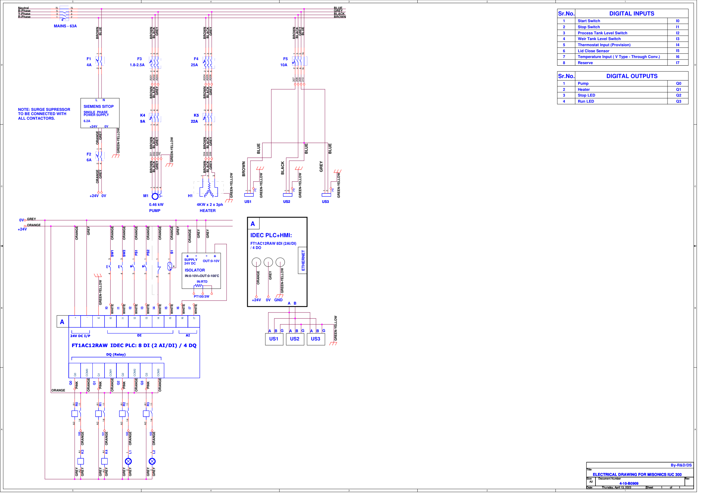
General arrangement
General-arrangement drawing for the MiSonics IUC 300. Key technical data is summarised below; minor or non-effective modifications may be made at the time of final production.
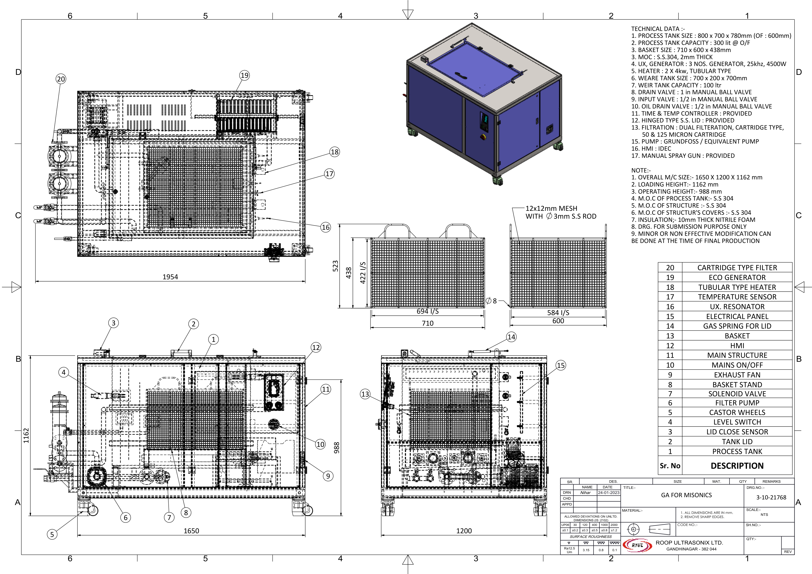
| Overall machine size | 1650 × 1200 × 1162 mm |
| Loading / operating height | 1162 mm / 988 mm |
| Process tank size | 800 × 700 × 780 mm (overflow at 600 mm), 300 L at overflow |
| Basket size | 710 × 600 × 438 mm (SS304, 2 mm thick) |
| Ultrasonics | 3 × generators, 25 kHz, 4500 W |
| Heaters | 2 × 4 kW tubular type |
| Weir tank | 700 × 200 × 700 mm, 100 L |
| Filtration | Dual cartridge, 50 & 125 micron |
| Structure / covers | SS304, 10 mm nitrile-foam insulation |
Recommended spares
Model: MiSonics IUC 300. Lead times are indicative; contact Kleentek Australia to order.
| # | Part | Code | Description | Lead time |
|---|---|---|---|---|
| 1 | Filtration pump | 445 021 101 | 0.84 kW, 5 m³/h, 14.7 m head — Grundfos CM5-2-A-R-A-V AVBV | 6 weeks |
| 2 | Filter (consumable) | 745 170 050 | Cartridge filter, 10″ long, 125 micron | 4 weeks |
| 3 | Filter (consumable) | 745 170 040 | Cartridge filter, 10″ long, 50 micron | 4 weeks |
| 4 | Filter housing | 700 396 611 | DOE-type cartridge filter housing, 1″ BS-10 Table E | 4 weeks |
| 5 | Pressure gauge | 745 295 040 | 1/4″ BSPM, 0–2 bar, red/green zone, glycerine filled | 4 weeks |
| 6 | Lid accessory | 690 818 200 | Gas spring — ACE GS-155-100-CC | 6 weeks |
| 7 | Castor wheel | 690 816 096 | 2.5″ nylon castor, adjustable swivel, heavy duty (500 kg) — Ideal WO18-80 F/S | 6 weeks |
| 8 | Power supply | 419 024 062 | 24 V DC, 6.2 A — Siemens 6EP1333-1LD00 | 6 weeks |
| 9 | Resonator | 901 751 255 | Ultrasonic tube resonator URT-25-48-5 (669 mm) | 6 weeks |
| 10 | Generator | 901 500 225 | ACG 25XXR | 6 weeks |
| 11 | Level switch | 300 661 010 | Liquid level switch FTL31-AA4U3BAWSJ — Endress+Hauser | 6 weeks |
| 12 | Heater | 450 343 245 | Heater coil, 4 kW, 600 mm, 3-phase, Ø45 mm — Jeka | 4–6 weeks |
| 13 | Heater casing | 450 343 502 | SS304 heater casing, 600 mm (Dwg 4-10-13164) | 4 weeks |
| 14 | Temperature sensor | 335 575 000 | RTD PT100, 100 mm below flange, 3 m — Radix | 6 weeks |
| 15 | Lid-close sensor | 300 951 210 | Magnetic switch — Banner SI-MAGB2SM (+ magnet SI-MAGB2MM) | 6 weeks |
Machine test report
Single-chamber ultrasonic cleaning system · Serial No. S23CP0001-0001 · Connection diagram 4-10-B0909 · Machine size 1650 × 1200 × 1180 mm.
| Component | Address | Measured (A) | Rated (A) |
|---|---|---|---|
| Process-tank heater (×2) | H1 | 10.60 / 10.40 / 10.48 | 25 |
| Recirculation pump | M1 | 0.99 / 1.06 / 1.10 | 1.8–2.5 |
| Ultrasonic 1 | UX1 | 2.20 | 10 |
| Ultrasonic 2 | UX2 | 2.17 | 10 |
| Ultrasonic 3 | UX3 | 2.19 | 10 |
| Process tank | 20 → 60 °C |
| Cartridge filter 1 | 10″×4″, 50 micron |
| Cartridge filter 2 | 10″×4″, 125 micron |
Error testing
The following protective functions were checked and confirmed during the factory test:
| Item | Make | Specification | Power | Supply |
|---|---|---|---|---|
| Recirculation pump (M1) | Grundfos | CM5-2-A-R-A-V-AVBV | 0.46 kW, 2820 rpm | 415 V, 50 Hz |
| Generator UX1 | — | G-MSX-25XXR | 1.5 kW, 10 A | 230 V, 50 Hz |
| Generator UX2 | — | G-MSX-25XXR | 1.5 kW, 10 A | 230 V, 50 Hz |
| Generator UX3 | — | G-MSX-25XXR | 1.5 kW, 10 A | 230 V, 50 Hz |
| Tube resonators HF1–3 | — | URT-25-48-5 (669 mm) | — | — |
Continuous running test: 25 cycles over one working day. Factory test passed.
Generator manual — introduction & safety
This part of the manual covers the Advance Cleaning Generator (ACG) ultrasonic generators fitted to the cleaning system. The exact designation depends on the frequency and power of the generator and reads ACG20/25/30/40xx; an appended “R” indicates the generator is supplied with an RS-25-XX tube resonator.
G1.1 Proper intended use
The ACG ultrasonic system is intended solely for ultrasonic cavitation of processing liquids. The manufacturer is not responsible for damage resulting from unauthorised use or misuse — the user bears the risk. Observance of these operating instructions and of the inspection and maintenance conditions is part of proper intended use.
G1.2 Symbols used
G2.1 General safety
The construction of the ACG corresponds to the current state of technology and is operationally safe. The equipment should always be used in a trouble-free state, in full awareness of safety considerations, in accordance with these instructions and for its intended purpose. Only genuine parts supplied by the manufacturer may be fitted.
- Operating personnel — operation may only be carried out by authorised, trained or instructed personnel. Work on the electrical equipment may only be done by a qualified electrician, or by an instructed person under a qualified electrician's supervision.
- Electrical — only operate the unit at the voltage with neutral shown on the nameplate, with a ground wire. Only carry out work on the components when the mains cable is unplugged. Use only voltage-insulated tools. Touch the mains plug only with dry hands; if a plug has contacted liquid, clean and dry it (e.g. with compressed air) before use.
- Ventilation — keep the ventilation openings unobstructed and ensure adequate air circulation to avoid internal heat build-up. Protect the generator and keypad from moisture and corrosive dust.
- Never run dry — the ultrasonic system must never be operated without liquid. To avoid overheating, the tube resonator or immersion transducer must never be run dry, and fluid must not be allowed to penetrate the transducer head or housing.
- Chemicals — do not use acidic additives. Halogen concentrations of chlorine, fluorine, bromine or iodine ions may cause pitting and should be avoided.
- Hot surfaces — tube resonators and transducers in use should never be touched; vibration friction can produce very high temperatures that can burn.
- Cooling — without total immersion, tube resonators must not be operated without cooling. If the bath temperature is constantly above 80 °C, cooling must remain active even during non-operating times.
G2.6 Emergency action
| Incident | Action |
|---|---|
| Electric shock | Switch off at the ON/OFF switch. Unplug from mains. Call for medical assistance and perform first aid. |
| Smoke, unusual noise or temperature rise | Switch off at the ON/OFF switch. Unplug from mains. |
| Fire in electrical systems | Extinguish with an appropriate fire extinguisher. Raise the alarm with the plant or municipal fire service. |
G3 Transport & positioning
Before commissioning, check that the components listed on the delivery note are complete and undamaged. The delivery company is responsible for transit damage — a detailed report (with a photo if possible) forms the basis of any claim. Position the generator away from heat sources, direct sunlight, heavy dust and mechanical vibration. Ambient: relative humidity 20–80%, operating temperature 10–55 °C. Allow approximately 0.5 m × 0.2 m of workspace.
What the generator does
The ACG supplies directly-attached baths, immersion transducers or tube resonators. It is built as an insert module and can provide a continuous ultrasonic output of 1000 / 1500 / 2000 VA.
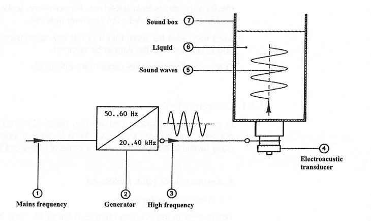
Operating method
The generator (2) converts the mains frequency (1) from 50 Hz to a high frequency (3) — depending on the application, 20–40 kHz. The electro-acoustic transducer (4) converts the electrical oscillations into mechanical oscillations of the same frequency. These sound waves (5) propagate in the liquid (6) via the sound box (7). Cavitation bubbles form if the intensity is sufficient; their creation and subsequent implosion form the desired “micro-brushes”. The four most important variables are cavitation, chemistry/processing fluid, temperature and sonication time.
Advantages of ultrasonic technology
- Short process times — from a few seconds to several minutes
- Higher productivity, better quality and maximum yield
- Savings on power, utilities and operating cost
- Simple, automated operation with reproducible results
- Lower chemical concentration than conventional cleaning
- Custom-made online or batch equipment available; quick pay-back period
Design & connections
The ACG is available in three front-panel versions — TFT (4.3″ colour touch screen), LED and Blind — all sharing the same generator body and connections.
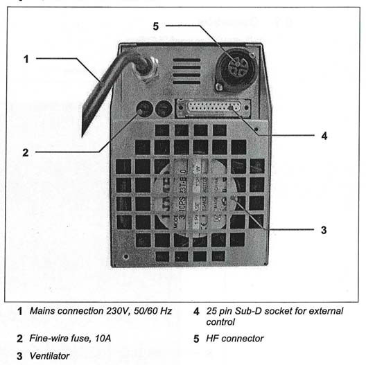
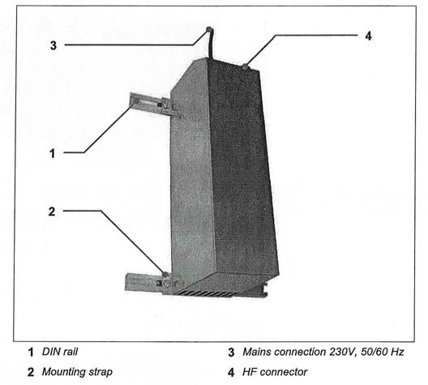
Tube resonator
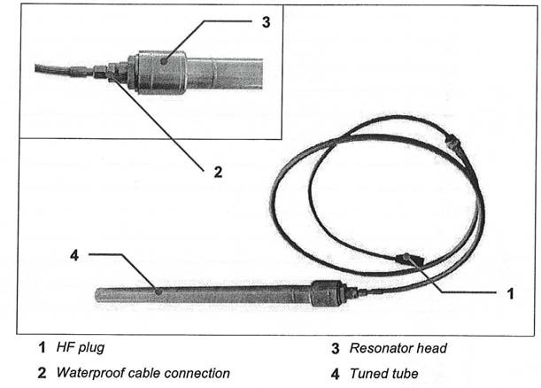
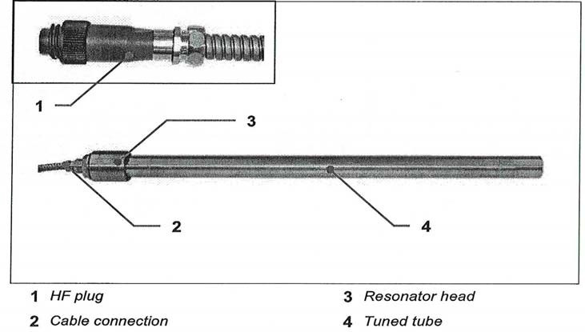
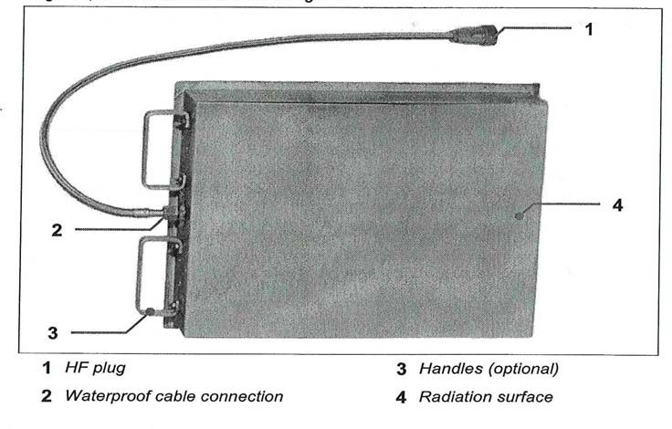
The TFT touch screen
The ACG uses a microprocessor-controlled constant-output regulator. The system always operates at the optimum working frequency and keeps the set power output constant under varying bath conditions; it is protected against short-circuits and overloads. On power-up the splash screen shows for 2 seconds, then the home screen appears.
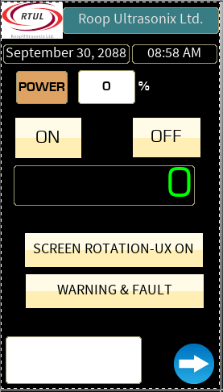
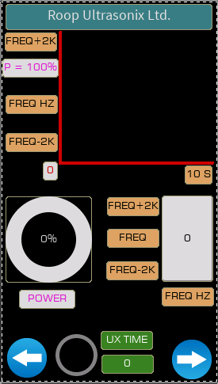
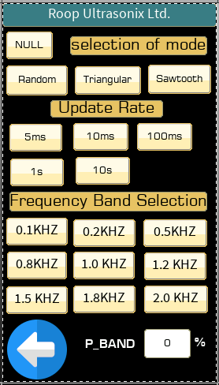
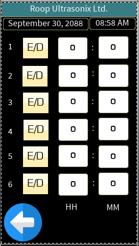
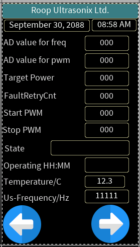
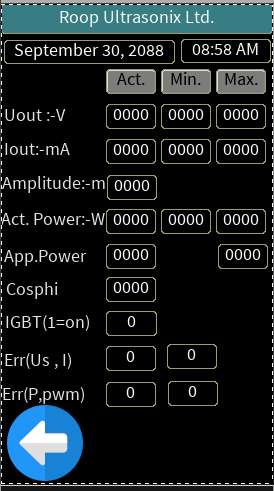
Key parameters
- UX ON time — sets how long the ultrasonics stay on; max 65535. With pulse on/off times set, the output cycles on and off for the set seconds while UX ON time is non-zero.
- Sweep mode — varies the frequency about the working frequency in a random, triangular or saw-tooth pattern, within the selected frequency band and power band.
- Boost mode — every boost interval, the power is increased by the boost percentage for the boost time. Disabled at 100% power; lower priority than pulse on/off, higher than degas.
- Degas mode — varies the output on a 100 ms time base (max 65535) to drive off dissolved gas. Requires UX ON time = 0.
- RTC — six channels can switch the ultrasonics on at a set time of day.
LED & Blind versions
On the tabletop LED model, the ultrasonics are switched directly with the front-panel ON/OFF button; output power is adjusted with the SET button across four levels from 60–100%, read from the green LED. On other models, on/off switching is via the built-in 25-pin interface. The Blind version is operated the same way as the common methods below.
Common operation — output power via the DB-25
Using the rear 25-pin Sub-D, three amplitude inputs (AMPL0–2) select the output power. Give a high signal (+24 V DC) on pin 1 to switch the ultrasonics on.
| AMPL0 | AMPL1 | AMPL2 | Output power |
|---|---|---|---|
| 0 | 0 | 0 | 100% |
| 1 | 0 | 0 | 90% |
| 0 | 1 | 0 | 75% |
| 1 | 1 | 0 | 65% |
| 0 | 0 | 1 | 50% |
| 1 | 0 | 1 | 45% |
| 0 | 1 | 1 | 40% |
| 1 | 1 | 1 | 30% |
Modbus RTU interface
The generator supports Modbus RTU over RS-485 (use 2-wire shielded cable on the front 3-pin connector). Default serial parameters: baud 57600, 8 data bits, no parity, 1 stop bit. Supported functions: 01 read coils, 03 read holding registers, 05 write single coil, 06 write single register.
Read-only registers (function 03)
| Address | Variable | Description |
|---|---|---|
| 40001 | Us_frequency | Actual frequency (Hz) |
| 40002 | sIout | Actual current (mA) |
| 40003 | ACT_Power | Actual power (W) |
| 40004 | sUout | Actual voltage (V) |
| 40007 | App_power | Apparent power = (sUout × sIout) / 1000 |
| 40008 | Temperature | Actual generator temperature |
| 40011 | Target_power | Power set point (W) |
| 40012 | Cos phi | Power factor |
| 40013 | Error No | Active error number |
Read / write registers (functions 03 / 06)
| Address | Variable | Notes |
|---|---|---|
| 40021 | Bit-set register | Select parameters via bit positions (see bit-set list) |
| 40022 | Degas on/off | 1 = degas on, 2 = degas off |
| 40024 | Modbus ID | Device ID, 1–31 |
| 40025 | User power (%) | 1–100 |
| 40026–40028 | Boost interval / time / power | 0–999 s · 0–999 s · 10–100% |
| 40029–40040 | RTC ch 1–6 hour / minute | Hour 1–12, minute 0–59 |
| 40041 | Sweep mode | 0 off · 1 random · 2 triangular · 3 saw-tooth |
| 40042 | Update rate | 1=5 ms · 2=10 ms · 3=100 ms · 4=1 s · 5=10 s |
| 40043 | Frequency band | 1=0.1 kHz … 9=2.0 kHz |
| 40044 | Power band (%) | 5–100 (sweep) |
| 40045–40047 | UX on / pulse on / pulse off | 0–65535 (UX on & pulse off), 1–65535 (pulse on) |
| 40048 | Baud rate | 1=9600 … 5=115200 |
| 40049–40050 | Degas UX on / off (×100 ms) | 1–65535 |
| 40051–40056 | Month / date / year / hour / minute / second | Set the clock (hour in 24-h format) |
| 40057 | Master operator | 0 all access · 1 TFT/LED only · 2 serial only · 3 DB-25 only |
| 40059 | Device off/on | Write 1 to toggle |
Resetting serial communication
Via DB-25: connect pins 2 and 18 and, with the device on, connect/disconnect them more than 5 times. Via LED panel: press SET and ON/OFF together for 10 seconds until LED 4 turns off. After a successful reset the defaults are restored: baud 57600, 8 data bits, no parity, 1 stop bit, Modbus ID 1.
Faults & warnings
The generator recognises the following statuses. For most power/current faults: check the resonator, switch the generator off and on, and check the setting parameters; if the problem persists it is likely a generator hardware fault.
| No. | Fault | Meaning & solution |
|---|---|---|
| 1 | Overload P, I | Generator drawing high power and current. Check resonator and settings; cycle power. |
| 2 | No load | Generator unable to take power. Check resonator and connections. |
| 3 | Overload I | Device drawing high current. |
| 4 / 5 | Iout / Pout off AD | Current / power ADC not reading correctly — hardware. |
| 6 | Temperature high | Generator temperature too high. Check the cooling fan; allow it to cool, then switch the ultrasonics on later. |
| 7 | IGBT fault | Hardware (HCPL-316J / IGBT) fault. |
| 8 / 9 | Iout / Uout max interrupt | At UX-on start, current / voltage went too high. Check resonator and settings. |
| No. | Warning | Meaning & solution |
|---|---|---|
| 10 / 11 | E freq start / stop | Start / stop frequency setting error — set the value in the setting parameters. |
| 12 | E freq pwm stop < start | Stop frequency below start frequency — correct both. |
| 13 | E fdelta ≤ 0 | Delta value zero or negative — check start/stop frequency. |
| 14 | E fmax ≤ fmin | Frequency too low — check start/stop and actual frequency. |
| 15 | Power n.r. | Power not reached — check resonator and settings; cycle power. |
| 16 | Temperature | Temperature high — check the fan; allow to cool. |
| 17 | USB not detected | Pen drive not working or file not created. Attach the pen drive at power-on; if needed create a counter1.XLS file on it. |
Maintenance & warranty
Keep the generator clean and dry and ensure free ventilation — clean the air inlets/outlets every 6 months (disconnect from mains first). Keep operating elements away from liquids and avoid scratches on resonators and radiating surfaces. The manufacturer guarantees all components for 12 months from the date of purchase if operated as instructed; this excludes abrasion, wear and improper handling. Halogen-induced pitting is not covered by the warranty.
Connector wiring
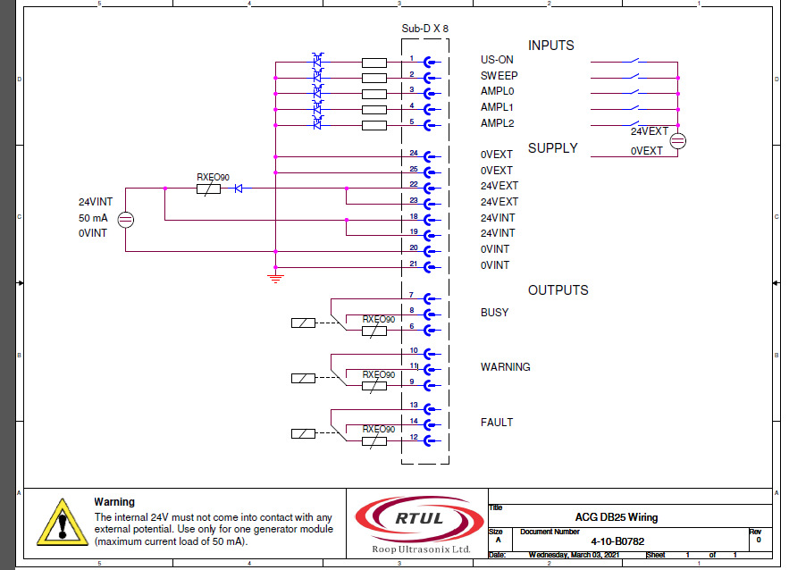
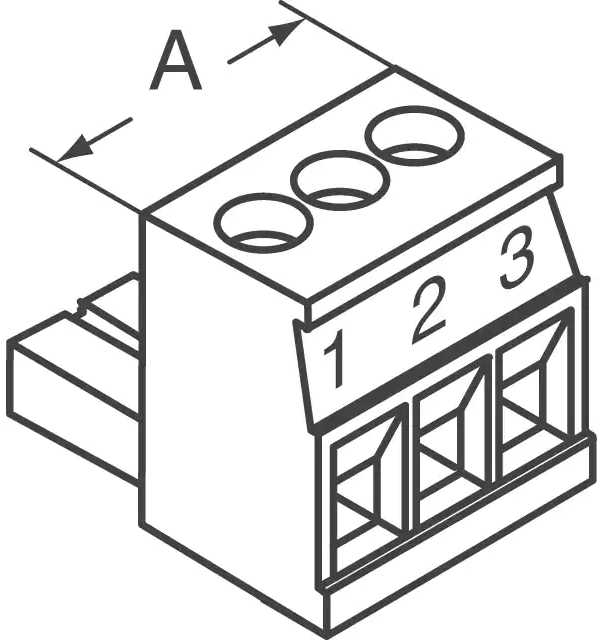
Disposal & recycling
Generators that have reached the end of their life can be disposed of according to the local rules for disposal or recycling of electronic scrap. Your local authority can provide further information; for more detail, please contact your supplier.